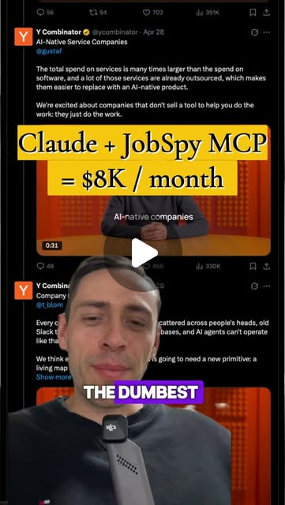
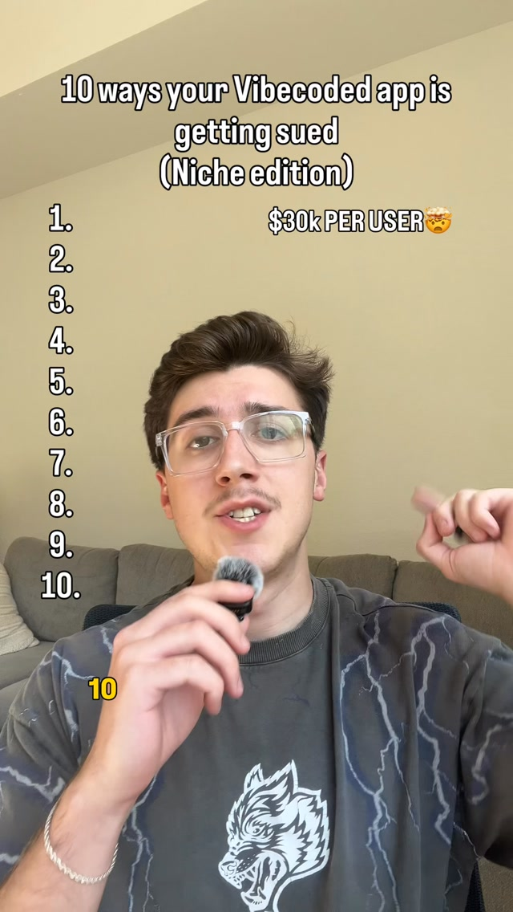

Buying Dead Apps — the one-person AI-native rollup
Try It — Action Sketch
Scrape listings on micro-acquisition marketplaces (Acquire.com, Flippa) under $50k and have Claude score each on revenue stability, stack age, and how much of the code you could replace. For the top three, request repo access under NDA, run gitingest plus deepwiki, and have an orchestrator agent produce a rebuild spec, a cost estimate in hours and the compliance gap list. Buy one, ship PostHog first, then rebuild only the top-used flows with an orchestrator/executor loop and daily regression tests, and track churn monthly. falsifier: if the rebuild plus migration costs more than six months of the app's profit, or churn after migration goes above 10%, the AI discount isn't real at this size.
Connected Posts (11)






Prompt system — run this yourself
Pasteable into Claude Code, Claude, or any agent. One-shot for the whole result, step prompts when you want to steer. Every step carries its own audit; the gap audit makes the agent find and fill what it missed.
Mission. Produces an underwriting pipeline for buying one small cash-flowing app under 50K USD and rebuilding it with an agent stack: a scored listing table from Acquire.com and Flippa, verified financials, a repo-comprehension pack (Gitingest, DeepWiki, GitDiagram, GitMCP), a rebuild spec with an hour estimate, a compliance and performance gap list, and a 90-day post-close plan with churn tracking. Done means the buyer can say, with evidence, whether rebuild plus migration costs less than six months of verified profit. No money is wired until a paper underwriting of three deals and an independent verification of revenue both pass.
1 · Deeper, not bigger
- What a top professional would do (that you didn't ask for): A search-fund operator or micro-PE buyer would verify revenue from the payment processor and bank, never from seller screenshots, and would look at cohort churn, customer concentration and platform dependency before reading a line of code. They would underwrite on seller's discretionary earnings with a multiple, model the downside where traffic or an app-store listing disappears, and structure the deal as an asset purchase with escrow, an IP assignment, a transition period and a non-compete. On the technical side they would write characterization tests of current behavior before rewriting anything and migrate with a strangler pattern. They would treat the Bending Spoons story as survivorship: Evernote and Vimeo had brands; a 30K USD app may have nothing but a search rank.
- Rawest material to start from: Listing pages and data rooms on Acquire.com and Flippa; read-only Stripe, Paddle or App Store Connect access and bank statements for 24 months; Google Search Console and analytics access; the actual git repository with full history; dependency manifests and lockfiles; hosting bills; support inbox exports; the privacy policy and terms as published; app-store review history. For the playbook itself: Bending Spoons' public statements and S-1 or IPO filings if available, and the public SaaS drawdown data behind the 'Atlassian -63%, HubSpot -48%, Workday -47%' claim.
- Methods and tools: Claude Code with a Fable-orchestrates-Opus loop: the expensive model writes specs and reviews, cheaper subagents implement in parallel git worktrees. Repo comprehension by URL swap: gitingest.com for a single prompt-ready dump, deepwiki.com for generated docs, gitdiagram.com for architecture, gitmcp.io for live agent queries. Code facts: scc or cloc for size, git log churn analysis, gitleaks or trufflehog for secrets, osv-scanner for vulnerable dependencies, scancode-toolkit for license audit. Behavior: Playwright characterization tests, PostHog to learn which flows customers actually use. Earned autonomy per task type from the agentic-OS post: autonomy after 20 passes at 95%, revoked below 90%, and every API call checks stop_reason because refusals return HTTP 200. Valuation: seller's discretionary earnings, a downside scenario, payback months.
- What proves it right: Processor and bank data reconciled to the listing's claimed revenue within 5%; a lawyer's review of the asset purchase agreement; an escrow service holding funds until transfer; post-close monthly churn from the processor compared to the pre-close cohort baseline; the characterization test suite passing on old and new code; and the actual rebuild hours logged against the estimate.
Rewritten prompt — ask for exactly that:
Act as a micro-acquisition analyst and technical due-diligence lead. I want to buy one software app under 50K USD and rebuild it with coding agents, Bending Spoons style. Do not contact sellers or move money; produce analysis only. First, scrape current Acquire.com and Flippa listings under 50K USD (respect each site's terms; if scraping is disallowed, use exports or manual copy). For each, record asking price, claimed trailing-12-month revenue and profit, multiple, age, stack, traffic source, platform dependency and churn if stated, then score revenue stability, stack age and replaceable share of code. Shortlist three. For each, write the diligence request list: read-only Stripe or App Store Connect access, 24 months of bank statements, Search Console, repo access under NDA. Specify the repo-comprehension pass with Gitingest, DeepWiki, GitDiagram and GitMCP, plus scc, gitleaks, osv-scanner and scancode. Draft a rebuild spec covering only flows PostHog shows customers use, with an hour estimate and the compliance gap list: privacy policy disclosure of data, AI use and third parties, deletion of uploads, private storage buckets, easy cancellation, trial-end reminders. Compute payback: rebuild plus migration hours times my hourly cost against six months of verified profit. Flag any deal where that ratio exceeds 1 or where verified revenue differs from the listing by more than 10%.
2 · One-shot prompt
ROLE AND STANCE You are a micro-acquisition analyst and technical diligence lead for a solo buyer who wants to apply the Bending Spoons playbook at small scale: buy a stagnant cash-flowing app, rebuild only the flows customers use with coding agents, expand margin. Treat the source posts as hypotheses. Claims to test: Bending Spoons grew from 40K USD to an 18B USD IPO this way; public SaaS multiples roughly halved; AI makes rebuilding cheap; a cron-driven orchestrator/executor loop with earned autonomy can run unattended; vibe-coded apps carry ten legal traps (one creator quotes 2,500 to 8,000 USD per user for privacy-policy gaps) and five performance gaps. CONTEXT - Deal sources: Acquire.com, Flippa. Structure: asset purchase agreement, escrow, IP assignment, transition support, non-compete. - Repo comprehension: swap github.com in a URL for gitingest.com, deepwiki.com, gitdiagram.com, or gitmcp.io; press '.' on GitHub for browser VS Code. Reverse Engineer Anything for understanding behavior of code the buyer will own. - Build loop: Claude Code, the expensive model plans and reviews, Opus subagents implement in parallel worktrees, review-fix loop until approved; autonomy per task type after 20 passes at 95%, revoked under 90%; check stop_reason on every call; daily regression tests. - Analytics: PostHog installed first post-close to find used flows. - Performance checklist: gzip or brotli on API responses, batched DB writes, profile round-trip latency to find the single slow step, optimistic UI, cached rendering. HARD CONSTRAINTS 1. Analysis only. Do not contact sellers, sign anything, or move money. Purchase decisions return to the user. 2. Revenue counts only when reconciled to processor and bank data within 5%; screenshots are not evidence. 3. Paper underwriting first: fully underwrite three shortlisted deals as if buying, without buying, and record your predicted payback for later comparison. 4. Caps: purchase price at most 50K USD and at most 3x verified seller's discretionary earnings; rebuild budget at most 6 months of verified profit. 5. Legal and tax points are flagged for a lawyer or accountant; never presented as advice. 6. Reverse engineering applies only to code and systems the buyer owns or has written permission to analyze. DELIVERABLES IN ORDER 1. listings.parquet with score columns and a ranked shortlist of three with reasons. 2. diligence_requests.md per shortlisted deal. 3. tech_dd.md per deal: scc size, churn hotspots, secrets found, vulnerable dependencies, license conflicts, architecture diagram link, hosting cost, single points of failure. 4. rebuild_spec.md: flows to keep, flows to drop, target stack, characterization tests, migration plan (strangler pattern), hour estimate with a range. 5. compliance_perf_gaps.md: each of the ten legal traps and five performance gaps marked present, absent or unknown with evidence. 6. underwriting.xlsx or .csv: price, verified profit, multiple, rebuild hours times hourly cost, payback months, downside case with 30% revenue loss, falsifier check. 7. post_close_plan.md: 90 days, PostHog first, monthly churn tracking against the pre-close cohort baseline. BUILT-IN GAP ANALYSIS End with GAPS: every number not reconciled to source data; listing claims you could not verify; repo areas the comprehension tools could not explain; legal items needing a professional. Fill what you can now, for example by recomputing multiples from verified numbers. SELF-QUESTIONS - Is this app's value in code, or in a search rank or store listing that could vanish? - What share of revenue comes from the top five customers? - Does the hour estimate include data migration, support load and app-store review delays? - Would rebuild plus migration cost more than six months of verified profit? - Which of the ten legal traps already applies to the seller's current app, making me liable on day one? STOP CONDITIONS Stop and report if no listing survives revenue verification, if every shortlisted deal fails the payback test, or if repo access is refused. RETURN FORMAT Ranked shortlist with one-line verdicts, the file list, the underwriting table, GAPS, and self-question answers.
3 · Step-by-step prompts
Step 1 — Ground truth: listings and verified financials
Goal: Build a scored deal table from primary listing data and define what counts as verified revenue.
Collect every current software listing under 50K USD on Acquire.com and Flippa. Check each site's terms first; if automated scraping is not allowed, use their export, saved searches, or manual copy into a sheet. For each listing record: URL, asking price, claimed trailing-12-month revenue and profit, implied multiple, business age, tech stack, monetization (subscription, one-time, ads), traffic sources, platform dependency (App Store, Shopify app store, Chrome Web Store), stated churn, and seller reason. Score 1 to 5 on revenue stability, stack age (older stack means more rebuild leverage and more risk), share of code plausibly replaceable, and platform risk. Write listings.parquet and a shortlist of three with reasons. For each shortlisted deal, write diligence_requests.md asking for read-only processor access, 24 months of bank statements, Search Console and analytics, support volume, hosting bills, and repo access under NDA.
Expect: listings.parquet with all fields, a top-three shortlist, and three request lists.
Audit before moving on: Recompute every multiple from price and profit. Fail if any listing lacks a source URL or if shortlist reasons rely on unverified seller claims without flagging them.
Step 2 — Repo comprehension and technical diligence
Goal: Understand each shortlisted codebase fast and find hidden liabilities.
For each shortlisted repo (only after access is granted under NDA), run: gitingest to produce a single text dump; DeepWiki for generated documentation if the repo is public or mirrored privately; GitDiagram for an architecture diagram; GitMCP so the agent can query the repo live. Then run scc for size and language mix, git log --numstat for churn hotspots over the last 12 months, gitleaks for committed secrets, osv-scanner on lockfiles for vulnerable dependencies, and scancode-toolkit for license conflicts. Identify single points of failure: one maintainer, one payment integration, unmaintained SDKs, hard-coded credentials. Write tech_dd.md per deal with findings, severity, and the estimated fix hours. Finally, list the three files or modules an executor agent would need to read first to change any core flow, and note where DeepWiki's generated docs disagreed with the code.
Expect: Three tech_dd.md files with tool output summaries, a diagram link or image, and a severity-ranked findings list.
Audit before moving on: Confirm each finding cites the tool output line. Fail if secrets are copied into the report; report only the file and rule ID. If a tool failed to run, mark that area unknown, not clean.
Step 3 — Rebuild spec scoped to used flows
Goal: Specify the smallest rebuild that keeps paying customers.
Using tech_dd.md, the seller's analytics, and support tickets, list every user-facing flow and mark it core, secondary, or dead. If usage data is weak, specify installing PostHog first post-close and deciding after two weeks of events. Write rebuild_spec.md: flows to keep, flows to drop, target stack, data model and migration plan using a strangler pattern (route one flow at a time to new code), characterization tests in Playwright for every core flow written against the old app before any rewrite, and an hour estimate per flow as low, expected and high. Include the five performance fixes as explicit tasks: response compression, batched writes, latency profiling, optimistic UI, cached rendering. Structure the work for an orchestrator that writes specs and reviews, and executor subagents in parallel worktrees, with autonomy granted per task type after 20 passes at 95%.
Expect: rebuild_spec.md with a flow table, test list, migration sequence and hour estimates with ranges.
Audit before moving on: Fail if any core flow lacks a characterization test or if the estimate omits data migration, support and app-store review delays. Sum hours and compare to a naive estimate from scc line counts; explain gaps over 2x.
Step 4 — Compliance and performance gap list
Goal: Find liabilities the buyer inherits on closing day.
For each shortlisted app, check the ten legal traps from the source post: no privacy policy; policy not disclosing data collection; policy not disclosing AI use; policy not naming third-party processors; uploads promised deleted but still stored; public storage buckets; fake testimonials; hard-to-cancel subscriptions; trial auto-charges without reminder; chatbots without self-harm handling. Inspect the live site, the policy text, storage configuration (bucket ACLs), subscription flow, and deletion code paths. The per-user fine figures in the post are claims; replace them with the actual governing rules (GDPR, CCPA/CPRA, state automatic-renewal laws, FTC guidance on reviews and negative-option billing) and mark each for lawyer review. Then measure the five performance gaps on the live app: response compression headers, write batching in code, request waterfall timing, UI update behavior, cache headers. Write compliance_perf_gaps.md with present, absent, unknown, evidence and fix hours.
Expect: A 15-row table per deal with evidence links or code references.
Audit before moving on: Fail if any row is marked absent without evidence. Do not test bucket access by downloading user data; check configuration only.
Step 5 — Paper underwriting of three deals
Goal: Decide on paper whether the AI rebuild discount is real at this size.
For each shortlisted deal, build underwriting.csv: asking price, verified trailing-12-month profit (or 'unverified' and excluded), multiple on verified profit, rebuild hours from rebuild_spec.md times the buyer's hourly cost, compliance and performance fix hours, migration cost, and payback months. Run a downside case with revenue down 30% and churn at twice the baseline. Apply the falsifier: rebuild plus migration cost above six months of verified profit, or expected post-migration churn above 10%, fails the deal. Apply caps: price at most 50K USD and at most 3x verified seller's discretionary earnings. Record predictions (hours, churn, payback) in predictions.json with a timestamp so a later actual can be scored against them. Compare to a control: what the same capital earns in a treasury bill over the payback period.
Expect: underwriting.csv, predictions.json, and a one-paragraph verdict per deal.
Audit before moving on: Fail if any input is unverified but used as verified. Recompute payback with a fresh script. Check the downside case is actually computed, not described.
Step 6 — Validate against oracles and write the gap report
Goal: State which deal, if any, passes, and what remains unproven.
Assemble final_report.md. For each deal: verified versus claimed revenue difference, tech findings by severity, compliance liabilities, payback base and downside, falsifier result, and a buy, pass or need-more-data verdict for the user to decide on. Write post_close_plan.md for the best deal: day 1 PostHog and credential rotation, weeks 1 to 2 characterization tests, weeks 3 to 10 strangler rebuild of core flows with daily regression tests in CI, monthly churn from the processor against the pre-close cohort. Then a GAPS section listing every source claim (18B USD IPO from 40K USD; public SaaS down roughly half; AI cheapens rebuilds; earned autonomy works unattended; the legal fine figures) as verified, unverified or false with evidence, and every deal number that is still seller-reported. Recommend which professional must review what before any money moves.
Expect: final_report.md, post_close_plan.md and a GAPS list.
Audit before moving on: Fail if a buy verdict rests on any unverified number or if the report omits the lawyer and escrow requirement. Cross-check three numbers against underwriting.csv.
4 · Gap analysis and audit
You are an independent reviewer of a micro-acquisition package. Open listings.parquet, tech_dd.md files, rebuild_spec.md, compliance_perf_gaps.md, underwriting.csv, predictions.json and final_report.md. List every number and claim that supports a buy or pass verdict. Mark each verified (cite processor export, bank statement, tool output or code line), unverified (name the document that would prove it), or false. Specifically check: revenue reconciled to processor and bank within 5%; multiple computed on verified profit; rebuild hours include migration, support and store review; every core flow has a characterization test; secrets were not pasted into reports; each legal row cites the governing rule rather than a social-media fine figure; the downside case was computed; the falsifier threshold of six months of profit was applied. List missing items such as unrequested documents, unscanned repos, or untested flows. Rank by how much each could change a buy verdict, fix the top three now by recomputing or requesting the missing document in the requests list, and report before and after. End with what cannot be fixed without the seller, a lawyer or an accountant, and confirm no money moves before those reviews.
Questions the agent must ask itself before it says done:
- Is the value in the code, or in a search rank, app-store listing or domain that a rebuild could lose?
- Did I reconcile revenue to the processor and bank, or to the seller's dashboard?
- What share of revenue sits with the top five customers, and what happens if one leaves at handover?
- Does the rebuild estimate cover data migration, support load during cutover, and store review delays?
- Which legal traps already exist in the seller's app and transfer to me at close?
- Which flows does PostHog or the seller's analytics show customers actually use, versus what the code contains?
- Is the stack old enough that rebuilding pays, but not so tangled that characterization tests are impossible?
- Does the asset purchase agreement transfer IP, domains, accounts and customer contracts cleanly?
- Would a treasury bill beat this deal's downside case over the payback period?
- Did the earned-autonomy loop check stop_reason, or could refusals have passed as success?
5 · What proves it right
- Read-only processor exports and bank statements reconciled to the listing within 5%.
- A lawyer's review of the asset purchase agreement and the compliance gap list; an escrow service holding funds until transfer.
- The characterization test suite passing on the old app before the rewrite and on the new app after each strangler step.
- Post-close monthly churn from the processor versus the pre-close cohort baseline, with the 10% falsifier threshold.
- Actual rebuild hours logged in predictions.json scored against the paper estimate.
6 · Failure modes
- Screenshot revenue: seller dashboards overstate. Tell: numbers do not reconcile to deposits. Fix: require processor read-only access and bank statements before shortlisting.
- Rank, not code: traffic from one search ranking collapses after migration changes URLs. Tell: Search Console shows most revenue from a few pages. Fix: preserve URLs and redirects; treat SEO as a core flow.
- Rewrite before understanding: agents rewrite flows nobody tested. Tell: support tickets spike after cutover. Fix: characterization tests first, strangler migration one flow at a time.
- Inherited liability: public buckets or undeleted uploads exist at close. Tell: compliance table rows marked present. Fix: fix before migration and negotiate escrow holdback.
- Silent agent failures: refusals returned as HTTP 200 counted as success. Tell: tasks pass but output is empty or a refusal text. Fix: check stop_reason and revoke autonomy below 90% pass rate.
- Estimate optimism: hours ignore migration and support. Tell: actual hours exceed the high estimate in month one. Fix: re-underwrite with actuals and stop if payback breaks.
7 · Agent direction (unattended runs)
Start with Acquire.com and Flippa listing data, then stop and hand the shortlist and request lists to the user, because data room access, NDAs and seller contact are the user's actions. Cache listings and every tool output under a deals/ folder per listing. Once repo access exists, spawn one sub-agent per shortlisted repo for step 2 tool runs in isolated worktrees, and review their findings by spot-checking three tool outputs each. Run steps 3 to 5 yourself, since they are judgment-heavy. Never paste secrets found by gitleaks into any report. Never run reverse-engineering tools on apps the user does not own or have written permission to analyze. Stop and ask when revenue cannot be verified, when a legal question decides the verdict, or before any communication with a seller. Return final_report.md as the entry point, with listings.parquet, tech_dd.md files, rebuild_spec.md, compliance_perf_gaps.md, underwriting.csv, predictions.json and post_close_plan.md beside it.
Prompt system updated 2026-10-22 · all prompt systems · JSON